SWISS-MODEL Homology Modelling Report |
Model Building Report
This document lists the results for the homology modelling project "T451DRAFT_1319" submitted to SWISS-MODEL workspace on July 11, 2017, 11:12 p.m..The submitted primary amino acid sequence is given in Table T1.
If you use any results in your research, please cite the relevant publications:
Marco Biasini; Stefan Bienert; Andrew Waterhouse; Konstantin Arnold; Gabriel Studer; Tobias Schmidt; Florian Kiefer; Tiziano Gallo Cassarino; Martino Bertoni; Lorenza Bordoli; Torsten Schwede. (2014). SWISS-MODEL: modelling protein tertiary and quaternary structure using evolutionary information. Nucleic Acids Research (1 July 2014) 42 (W1): W252-W258; doi: 10.1093/nar/gku340.Arnold, K., Bordoli, L., Kopp, J. and Schwede, T. (2006) The SWISS-MODEL workspace: a web-based environment for protein structure homology modelling. Bioinformatics, 22, 195-201.
Benkert, P., Biasini, M. and Schwede, T. (2011) Toward the estimation of the absolute quality of individual protein structure models. Bioinformatics, 27, 343-350
Results
The SWISS-MODEL template library (SMTL version 2017-07-06, PDB release 2017-06-30) was searched with Blast (Altschul et al., 1997) and HHBlits (Remmert, et al., 2011) for evolutionary related structures matching the target sequence in Table T1. For details on the template search, see Materials and Methods. Overall 58 templates were found (Table T2).
Models
The following models were built (see Materials and Methods "Model Building"):
Model #02 | File | Built with | Oligo-State | Ligands | GMQE | QMEAN |
|---|---|---|---|---|---|---|
| 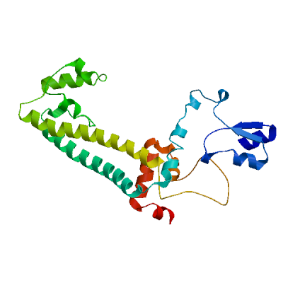 | PDB | ProMod3 Version 1.0.2. | MONOMER | None | 0.25 | -4.10 |
| 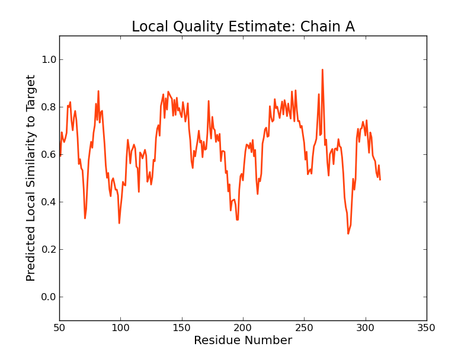 | 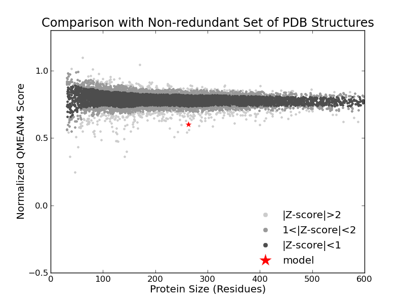 |
| Template | Seq Identity | Oligo-state | Found by | Method | Resolution | Seq Similarity | Range | Coverage | Description |
|---|---|---|---|---|---|---|---|---|---|
| 3id5.1.E | 14.86 | hetero-oligomer | HHblits | X-ray | 4.01Å | 0.26 | 0.51 | Pre mRNA splicing protein |
| Ligand | Added to Model | Description |
|---|---|---|
| SAM | ✕ - Binding site not conserved. | S-ADENOSYLMETHIONINE |
| SAM | ✕ - Binding site not conserved. | S-ADENOSYLMETHIONINE |
Target MSKIKNHFELTHPNAAGIDIGSSSHFVAVPPDRNEQSVREFLSFTEDLYALADWLTACGVDTVAMESTGVYWILFELLES
3id5.1.E -------------------------------------------------ATVELLKKVNPQEVVVENE-A---EVPKLQA
Target RGFTVYLVNARHVKN-VS--------G-----RKSDVLDC-QWLQQLMSFGLLSGAFRPQGDFCALRAVARLRDMLLRNQ
3id5.1.E LGYRVSYEPYSKVSRIFRESLPKVAIDIKFASNEEDYYNFLHELSLE--YTRRKLRSAAQKRDLLAIQAVRAMDDIDKTI
Target AKHIQHIQKALLLMNLLLTEVISDVVGETGQKIIRAILAGE-CDGQVLAKYR-NNHIKASEEEIAKALQGN-WREEHLFA
3id5.1.E NLFSERLREWYSIHFPELDKLIEDH--EEYATIVSRFGDRGFLTIDSLKELGFNEQRINRILDAAKKSIGADISEDDLSA
Target LKQAVALYDAYAVQLMECDQPLKKMLKDLARNDLKADKPKRRGGKSKNAPNFDARTLLMQMCDVDLTRIDVTTAFKVLAE
3id5.1.E MRMIANTILDLYNIRRNLNNYLEGVMKEVA-------------------------PNVTAL--V-----GPALGARLLSI
Target IGADLSRFKDAKHFASWLGLCPGTKISGGKKISAATSRTTNRAAQALKMAAVNLRASQSALGAYYRRLCGRMDKAKAVTA
3id5.1.E AG-SLDELAK----------------------------------------------------------------------
Target CAHKLARLIYVILTKGEDYVDQGQEHYEEKYRQRVIKNLTKHAKKFGFQLIPVPEGV
3id5.1.E ---------------------------------------------------------
Model #01 | File | Built with | Oligo-State | Ligands | GMQE | QMEAN |
|---|---|---|---|---|---|---|
| 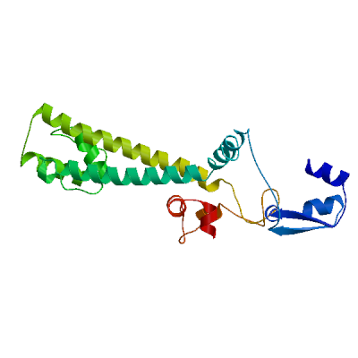 | PDB | ProMod3 Version 1.0.2. | MONOMER | None | 0.25 | -4.21 |
| 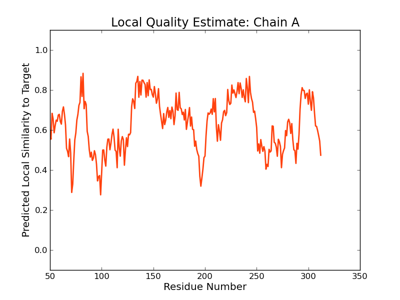 |
| Template | Seq Identity | Oligo-state | Found by | Method | Resolution | Seq Similarity | Range | Coverage | Description |
|---|---|---|---|---|---|---|---|---|---|
| 3pla.1.A | 14.86 | hetero-oligomer | HHblits | X-ray | 3.15Å | 0.26 | 50 - 312 | 0.51 | Pre mRNA splicing protein |
| Ligand | Added to Model | Description |
|---|---|---|
| SAH | ✕ - Binding site not conserved. | S-ADENOSYL-L-HOMOCYSTEINE |
| SAH | ✕ - Binding site not conserved. | S-ADENOSYL-L-HOMOCYSTEINE |
Target MSKIKNHFELTHPNAAGIDIGSSSHFVAVPPDRNEQSVREFLSFTEDLYALADWLTACGVDTVAMESTGVYWILFELLES
3pla.1.A -------------------------------------------------ATVELLKKVNPQEVVVENE-A---EVPKLQA
Target RGFTVYLVNARHVKN-VS--------G-----RKSDVLDC-QWLQQLMSFGLLSGAFRPQGDFCALRAVARLRDMLLRNQ
3pla.1.A LGYRVSYEPYSKVSRIFRESLPKVAIDIKFASNEEDYYNFLHELSLE--YTRRKLRSAAQKRDLLAIQAVRAMDDIDKTI
Target AKHIQHIQKALLLMNLLLTEVISDVVGETGQKIIRAILAGE-CDGQVLAKYR-NNHIKASEEEIAKALQGN-WREEHLFA
3pla.1.A NLFSERLREWYSIHFPELDKLIEDH--EEYATIVSRFGDRGFLTIDSLKELGFNEQRINRILDAAKKSIGADISEDDLSA
Target LKQAVALYDAYAVQLMECDQPLKKMLKDLARNDLKADKPKRRGGKSKNAPNFDARTLLMQMCDVDLTRIDVTTAFKVLAE
3pla.1.A MRMIANTILDLYNIRRNLNNYLEGVMKEVA-------------------------PNVTAL--V-----GPALGARLLSI
Target IGADLSRFKDAKHFASWLGLCPGTKISGGKKISAATSRTTNRAAQALKMAAVNLRASQSALGAYYRRLCGRMDKAKAVTA
3pla.1.A AG-SLDELAK----------------------------------------------------------------------
Target CAHKLARLIYVILTKGEDYVDQGQEHYEEKYRQRVIKNLTKHAKKFGFQLIPVPEGV
3pla.1.A ---------------------------------------------------------
Model #03 | File | Built with | Oligo-State | Ligands | GMQE | QMEAN |
|---|---|---|---|---|---|---|
| 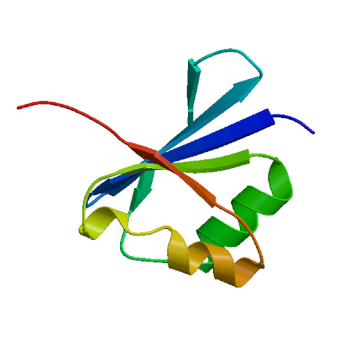 | PDB | ProMod3 Version 1.0.2. | MONOMER | None | 0.07 | -2.81 |
| 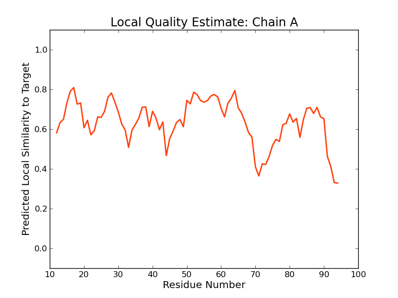 | 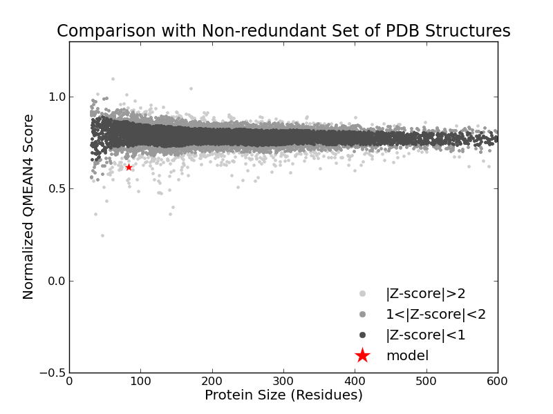 |
| Template | Seq Identity | Oligo-state | Found by | Method | Resolution | Seq Similarity | Range | Coverage | Description |
|---|---|---|---|---|---|---|---|---|---|
| 1nu0.2.A | 18.07 | monomer | HHblits | X-ray | 1.60Å | 0.26 | 12 - 94 | 0.19 | Hypothetical protein yqgF |
Target MSKIKNHFELTHPNAAGIDIGSSSHFVAVPPDRNEQS--VREF--LSFTEDLYALADWLTACGVDTVAME-----S-TGV
1nu0.2.A -----------SGTLMAFDFGTKSIGVAVGQRITGTARPLPAIKAQDGTPDWNIIERLLKEWQPDEIIVGLPLNMDGTEQ
Target YW----I-LFELLE-SRGFTVYLVNARHVKNVSGRKSDVLDCQWLQQLMSFGLLSGAFRPQGDFCALRAVARLRDMLLRN
1nu0.2.A PLTARARKFANRIHGRFGVEVKLHDERLST--------------------------------------------------
Target QAKHIQHIQKALLLMNLLLTEVISDVVGETGQKIIRAILAGECDGQVLAKYRNNHIKASEEEIAKALQGNWREEHLFALK
1nu0.2.A --------------------------------------------------------------------------------
Target QAVALYDAYAVQLMECDQPLKKMLKDLARNDLKADKPKRRGGKSKNAPNFDARTLLMQMCDVDLTRIDVTTAFKVLAEIG
1nu0.2.A --------------------------------------------------------------------------------
Target ADLSRFKDAKHFASWLGLCPGTKISGGKKISAATSRTTNRAAQALKMAAVNLRASQSALGAYYRRLCGRMDKAKAVTACA
1nu0.2.A --------------------------------------------------------------------------------
Target HKLARLIYVILTKGEDYVDQGQEHYEEKYRQRVIKNLTKHAKKFGFQLIPVPEGV
1nu0.2.A -------------------------------------------------------
Model #04 | File | Built with | Oligo-State | Ligands | GMQE | QMEAN |
|---|---|---|---|---|---|---|
| 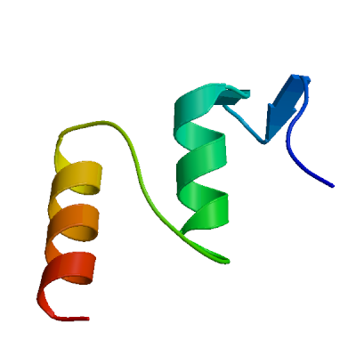 | PDB | ProMod3 Version 1.0.2. | MONOMER | None | 0.03 | -2.61 |
| 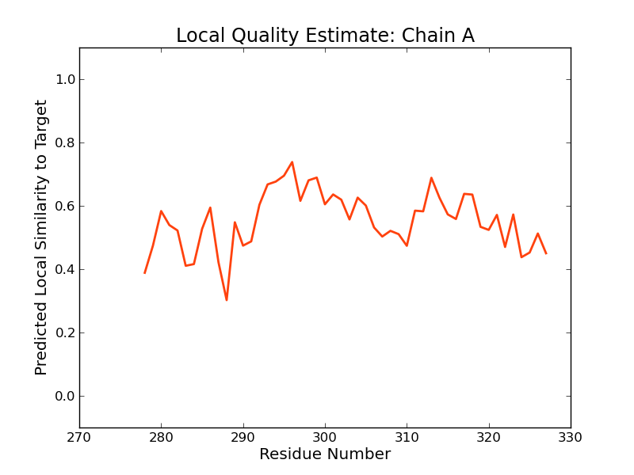 |
| Template | Seq Identity | Oligo-state | Found by | Method | Resolution | Seq Similarity | Range | Coverage | Description |
|---|---|---|---|---|---|---|---|---|---|
| 4ea4.1.A | 2.27 | monomer | HHblits | X-ray | 2.00Å | 0.22 | 278 - 327 | 0.10 | Methyl-CpG-binding domain protein 4 |
Target MSKIKNHFELTHPNAAGIDIGSSSHFVAVPPDRNEQSVREFLSFTEDLYALADWLTACGVDTVAMESTGVYWILFELLES
4ea4.1.A --------------------------------------------------------------------------------
Target RGFTVYLVNARHVKNVSGRKSDVLDCQWLQQLMSFGLLSGAFRPQGDFCALRAVARLRDMLLRNQAKHIQHIQKALLLMN
4ea4.1.A --------------------------------------------------------------------------------
Target LLLTEVISDVVGETGQKIIRAILAGECDGQVLAKYRNNHIKASEEEIAKALQGNWREEHLFALKQAVALYDAYAVQLMEC
4ea4.1.A --------------------------------------------------------------------------------
Target DQPLKKMLKDLARNDLKADKPKRRGGKSKNAPNFDARTLLMQMCDVDLTRIDVTTAFKVLAEI-GADLSR-FKDAKHFAS
4ea4.1.A -------------------------------------KYPIELHGI-----GKYGNDSYRIFCVN-EWKQVHPEAHKLNK
Target WLGLCPGTKISGGKKISAATSRTTNRAAQALKMAAVNLRASQSALGAYYRRLCGRMDKAKAVTACAHKLARLIYVILTKG
4ea4.1.A YHDWLWENH-----------------------------------------------------------------------
Target EDYVDQGQEHYEEKYRQRVIKNLTKHAKKFGFQLIPVPEGV
4ea4.1.A -----------------------------------------
Model #05 | File | Built with | Oligo-State | Ligands | GMQE | QMEAN |
|---|---|---|---|---|---|---|
| 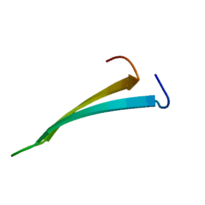 | PDB | ProMod3 Version 1.0.2. | MONOMER (matching prediction) | None | 0.03 | -1.61 |
| 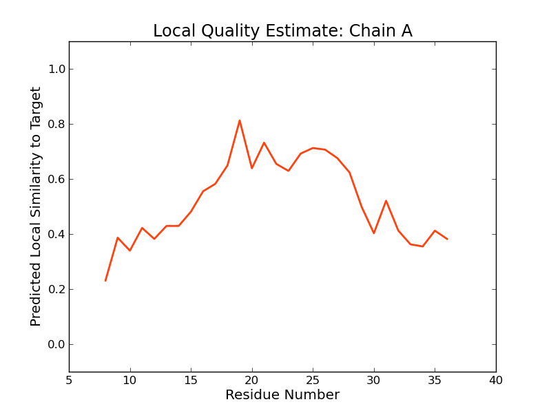 |
| Template | Seq Identity | Oligo-state | Found by | Method | Resolution | Seq Similarity | Range | Coverage | Description |
|---|---|---|---|---|---|---|---|---|---|
| 1zc6.1.B | 10.34 | homo-dimer | HHblits | X-ray | 2.20Å | 0.26 | 0.07 | probable N-acetylglucosamine kinase |
Target MSKIKNHFELTHPNAAGIDIGSSSHFVAVPPDRNEQSVREFLSFTEDLYALADWLTACGVDTVAMESTGVYWILFELLES
1zc6.1.B -------MNPSIRYLIGVDGGGTGTRIRLHASDGTP--------------------------------------------
Target RGFTVYLVNARHVKNVSGRKSDVLDCQWLQQLMSFGLLSGAFRPQGDFCALRAVARLRDMLLRNQAKHIQHIQKALLLMN
1zc6.1.B --------------------------------------------------------------------------------
Target LLLTEVISDVVGETGQKIIRAILAGECDGQVLAKYRNNHIKASEEEIAKALQGNWREEHLFALKQAVALYDAYAVQLMEC
1zc6.1.B --------------------------------------------------------------------------------
Target DQPLKKMLKDLARNDLKADKPKRRGGKSKNAPNFDARTLLMQMCDVDLTRIDVTTAFKVLAEIGADLSRFKDAKHFASWL
1zc6.1.B --------------------------------------------------------------------------------
Target GLCPGTKISGGKKISAATSRTTNRAAQALKMAAVNLRASQSALGAYYRRLCGRMDKAKAVTACAHKLARLIYVILTKGED
1zc6.1.B --------------------------------------------------------------------------------
Target YVDQGQEHYEEKYRQRVIKNLTKHAKKFGFQLIPVPEGV
1zc6.1.B ---------------------------------------
Materials and Methods
Template Search
Template search with Blast and HHBlits has been performed against the SWISS-MODEL template library (SMTL, last update: 2017-07-06, last included PDB release: 2017-06-30).
The target sequence was searched with BLAST (Altschul et al., 1997) against the primary amino acid sequence contained in the SMTL.
An initial HHblits profile has been built using the procedure outlined in (Remmert, et al., 2011), followed by 1 iteration of HHblits against NR20. The obtained profile has then be searched against all profiles of the SMTL. A total of 58 templates were found.
Template Selection
For each identified template, the template's quality has been predicted from features of the target-template alignment. The templates with the highest quality have then been selected for model building.
Model Building
Models are built based on the target-template alignment using ProMod3. Coordinates which are conserved between the target and the template are copied from the template to the model. Insertions and deletions are remodelled using a fragment library. Side chains are then rebuilt. Finally, the geometry of the resulting model is regularized by using a force field. In case loop modelling with ProMod3 fails, an alternative model is built with PROMOD-II (Guex, et al., 1997).
Model Quality Estimation
The global and per-residue model quality has been assessed using the QMEAN scoring function (Benkert, et al., 2011) . For improved performance, weights of the individual QMEAN terms have been trained specifically for SWISS-MODEL.
Ligand Modelling
Ligands present in the template structure are transferred by homology to the model when the following criteria are met (Gallo -Casserino, to be published): (a) The ligands are annotated as biologically relevant in the template library, (b) the ligand is in contact with the model, (c) the ligand is not clashing with the protein, (d) the residues in contact with the ligand are conserved between the target and the template. If any of these four criteria is not satisfied, a certain ligand will not be included in the model. The model summary includes information on why and which ligand has not been included.
Oligomeric State Conservation
Homo-oligomeric structure of the target protein is predicted based on the analysis of pairwise interfaces of the identified template structures. For each relevant interface between polypeptide chains (interfaces with more than 10 residue-residue interactions), the QscoreOligomer (Mariani et al., 2011) is predicted from features such as similarity to target and frequency of observing this interface in the identified templates (Kiefer, Bertoni, Biasini, to be published). The prediction is performed with a random forest regressor using these features as input parameters to predict the probability of conservation for each interface. The QscoreOligomer of the whole complex is then calculated as the weight-averaged QscoreOligomer of the interfaces. The oligomeric state of the target is predicted to be the same as in the template when QscoreOligomer is predicted to be higher or equal to 0.5.
References
Altschul, S.F., Madden, T.L., Schaffer, A.A., Zhang, J., Zhang, Z., Miller, W. and Lipman, D.J. (1997) Gapped BLAST and PSI-BLAST: a new generation of protein database search programs. Nucleic Acids Res, 25, 3389-3402.
Remmert, M., Biegert, A., Hauser, A. and Soding, J. (2012) HHblits: lightning-fast iterative protein sequence searching by HMM-HMM alignment. Nat Methods, 9, 173-175.
Guex, N. and Peitsch, M.C. (1997) SWISS-MODEL and the Swiss-PdbViewer: an environment for comparative protein modeling. Electrophoresis, 18, 2714-2723.
Sali, A. and Blundell, T.L. (1993) Comparative protein modelling by satisfaction of spatial restraints. J Mol Biol, 234, 779-815.
Benkert, P., Biasini, M. and Schwede, T. (2011) Toward the estimation of the absolute quality of individual protein structure models. Bioinformatics, 27, 343-350.
Mariani, V., Kiefer, F., Schmidt, T., Haas, J. and Schwede, T. (2011) Assessment of template based protein structure predictions in CASP9. Proteins, 79 Suppl 10, 37-58.
Table T1:
Primary amino acid sequence for which templates were searched and models were built.
SDVLDCQWLQQLMSFGLLSGAFRPQGDFCALRAVARLRDMLLRNQAKHIQHIQKALLLMNLLLTEVISDVVGETGQKIIRAILAGECDGQVLAKYRNNHI
KASEEEIAKALQGNWREEHLFALKQAVALYDAYAVQLMECDQPLKKMLKDLARNDLKADKPKRRGGKSKNAPNFDARTLLMQMCDVDLTRIDVTTAFKVL
AEIGADLSRFKDAKHFASWLGLCPGTKISGGKKISAATSRTTNRAAQALKMAAVNLRASQSALGAYYRRLCGRMDKAKAVTACAHKLARLIYVILTKGED
YVDQGQEHYEEKYRQRVIKNLTKHAKKFGFQLIPVPEGV
Table T2:
| Template | Seq Identity | Oligo-state | Found by | Method | Resolution | Seq Similarity | Coverage | Description |
|---|---|---|---|---|---|---|---|---|
| 3pla.1.A | 14.86 | hetero-oligomer | HHblits | X-ray | 3.15Å | 0.26 | 0.51 | Pre mRNA splicing protein |
| 3id5.1.E | 14.86 | hetero-oligomer | HHblits | X-ray | 4.01Å | 0.26 | 0.51 | Pre mRNA splicing protein |
| 5gip.2.A | 14.86 | hetero-oligomer | HHblits | X-ray | 3.13Å | 0.26 | 0.51 | C/D box methylation guide ribonucleoprotein complex aNOP56 subunit |
| 5jpq.1.S | 14.93 | hetero-oligomer | HHblits | EM | NA | 0.26 | 0.50 | Pre mRNA splicing protein |
| 5jpq.1.T | 14.93 | hetero-oligomer | HHblits | EM | NA | 0.26 | 0.50 | Pre mRNA splicing protein |
| 2ozb.1.C | 13.73 | hetero-oligomer | HHblits | X-ray | 2.60Å | 0.27 | 0.35 | U4/U6 small nuclear ribonucleoprotein Prp31 |
| 2ozb.2.C | 13.73 | hetero-oligomer | HHblits | X-ray | 2.60Å | 0.27 | 0.35 | U4/U6 small nuclear ribonucleoprotein Prp31 |
| 3siu.1.B | 13.82 | hetero-oligomer | HHblits | X-ray | 2.63Å | 0.27 | 0.35 | U4/U6 small nuclear ribonucleoprotein Prp31 |
| 3siu.2.B | 13.82 | hetero-oligomer | HHblits | X-ray | 2.63Å | 0.27 | 0.35 | U4/U6 small nuclear ribonucleoprotein Prp31 |
| 3siv.1.B | 13.82 | hetero-oligomer | HHblits | X-ray | 3.30Å | 0.27 | 0.35 | U4/U6 small nuclear ribonucleoprotein Prp31 |
| 3siv.1.E | 13.82 | hetero-oligomer | HHblits | X-ray | 3.30Å | 0.27 | 0.35 | U4/U6 small nuclear ribonucleoprotein Prp31 |
| 3siv.2.B | 13.82 | hetero-oligomer | HHblits | X-ray | 3.30Å | 0.27 | 0.35 | U4/U6 small nuclear ribonucleoprotein Prp31 |
| 3siv.2.E | 13.82 | hetero-oligomer | HHblits | X-ray | 3.30Å | 0.27 | 0.35 | U4/U6 small nuclear ribonucleoprotein Prp31 |
| 3icx.1.A | 14.97 | homo-dimer | HHblits | X-ray | 3.10Å | 0.26 | 0.33 | Pre mRNA splicing protein |
| 1xc3.1.A | 13.58 | monomer | HHblits | X-ray | 2.10Å | 0.29 | 0.18 | Putative fructokinase |
| 2gup.1.A | 26.58 | homo-dimer | HHblits | X-ray | 2.01Å | 0.31 | 0.18 | ROK family protein |
| 1nu0.1.A | 18.07 | monomer | HHblits | X-ray | 1.60Å | 0.26 | 0.19 | Hypothetical protein yqgF |
| 1nu0.2.A | 18.07 | monomer | HHblits | X-ray | 1.60Å | 0.26 | 0.19 | Hypothetical protein yqgF |
| 1ovq.1.A | 18.07 | monomer | HHblits | NMR | NA | 0.26 | 0.19 | Hypothetical protein yqgF |
| 1nmn.1.A | 18.07 | monomer | HHblits | X-ray | 2.30Å | 0.26 | 0.19 | Hypothetical protein yqgF |
| 1nmn.2.A | 18.07 | monomer | HHblits | X-ray | 2.30Å | 0.26 | 0.19 | Hypothetical protein yqgF |
| 5m1q.1.A | 16.67 | monomer | HHblits | X-ray | 1.45Å | 0.27 | 0.18 | Phage terminase large subunit |
| 4ife.1.A | 15.38 | monomer | HHblits | X-ray | 3.05Å | 0.26 | 0.18 | Gene 2 protein |
| 4idh.1.A | 15.38 | monomer | HHblits | X-ray | 1.69Å | 0.26 | 0.18 | Gene 2 protein |
| 5m1k.1.A | 16.00 | monomer | HHblits | X-ray | 1.20Å | 0.26 | 0.17 | Phage terminase large subunit |
| 5m1f.1.A | 16.00 | monomer | HHblits | X-ray | 2.15Å | 0.26 | 0.17 | Phage terminase large subunit |
| 5m1k.2.A | 16.00 | monomer | HHblits | X-ray | 1.20Å | 0.26 | 0.17 | Phage terminase large subunit |
| 4nb4.1.A | 22.64 | homo-dimer | HHblits | X-ray | 2.25Å | 0.32 | 0.12 | Type II pantothenate kinase |
| 4nb4.1.B | 22.64 | homo-dimer | HHblits | X-ray | 2.25Å | 0.32 | 0.12 | Type II pantothenate kinase |
| 4nb4.2.A | 22.64 | homo-dimer | HHblits | X-ray | 2.25Å | 0.32 | 0.12 | Type II pantothenate kinase |
| 4nb4.2.B | 22.64 | homo-dimer | HHblits | X-ray | 2.25Å | 0.32 | 0.12 | Type II pantothenate kinase |
| 4nb4.3.A | 22.64 | homo-dimer | HHblits | X-ray | 2.25Å | 0.32 | 0.12 | Type II pantothenate kinase |
| 2ews.1.A | 23.08 | homo-dimer | HHblits | X-ray | 2.05Å | 0.32 | 0.12 | Pantothenate kinase |
| 2ews.1.B | 23.08 | homo-dimer | HHblits | X-ray | 2.05Å | 0.32 | 0.12 | Pantothenate kinase |
| 4ea4.1.A | 2.27 | monomer | HHblits | X-ray | 2.00Å | 0.22 | 0.10 | Methyl-CpG-binding domain protein 4 |
| 5gnj.1.A | 13.33 | homo-dimer | HHblits | X-ray | 2.70Å | 0.28 | 0.07 | Transcription factor MYC2 |
| 5gnj.1.B | 13.33 | homo-dimer | HHblits | X-ray | 2.70Å | 0.28 | 0.07 | Transcription factor MYC2 |
| 5gnj.3.A | 13.33 | homo-dimer | HHblits | X-ray | 2.70Å | 0.28 | 0.07 | Transcription factor MYC2 |
| 5gnj.3.B | 13.33 | homo-dimer | HHblits | X-ray | 2.70Å | 0.28 | 0.07 | Transcription factor MYC2 |
| 5gnj.4.A | 13.33 | homo-dimer | HHblits | X-ray | 2.70Å | 0.28 | 0.07 | Transcription factor MYC2 |
| 5gnj.4.B | 13.33 | homo-dimer | HHblits | X-ray | 2.70Å | 0.28 | 0.07 | Transcription factor MYC2 |
| 1zc6.1.A | 10.34 | homo-dimer | HHblits | X-ray | 2.20Å | 0.26 | 0.07 | probable N-acetylglucosamine kinase |
| 1zc6.1.B | 10.34 | homo-dimer | HHblits | X-ray | 2.20Å | 0.26 | 0.07 | probable N-acetylglucosamine kinase |
| 5htv.1.A | 23.08 | monomer | HHblits | X-ray | 1.78Å | 0.31 | 0.06 | Putative xylulose kinase |
| 3vgk.1.A | 20.00 | homo-tetramer | HHblits | X-ray | 3.25Å | 0.30 | 0.06 | Glucokinase |
| 3vgk.2.D | 20.00 | homo-tetramer | HHblits | X-ray | 3.25Å | 0.30 | 0.06 | Glucokinase |
| 3vgl.1.A | 20.00 | homo-tetramer | HHblits | X-ray | 1.55Å | 0.30 | 0.06 | Glucokinase |
| 3vgm.1.A | 20.00 | homo-tetramer | HHblits | X-ray | 1.84Å | 0.30 | 0.06 | Glucokinase |
| 5hu2.1.A | 20.00 | monomer | HHblits | X-ray | 2.60Å | 0.29 | 0.06 | Probable sugar kinase |
| 5n9j.1.G | 3.70 | hetero-oligomer | HHblits | X-ray | 3.40Å | 0.22 | 0.06 | Mediator of RNA polymerase II transcription subunit 4 |
| 1hux.1.A | 30.43 | homo-dimer | HHblits | X-ray | 3.00Å | 0.34 | 0.05 | ACTIVATOR OF (R)-2-HYDROXYGLUTARYL-COA DEHYDRATASE |
| 5htj.1.A | 16.00 | monomer | HHblits | X-ray | 2.00Å | 0.27 | 0.06 | Probable sugar kinase |
| 3h6e.1.A | 16.00 | monomer | HHblits | X-ray | 2.50Å | 0.26 | 0.06 | Carbohydrate kinase, FGGY |
| 3h6e.2.A | 16.00 | monomer | HHblits | X-ray | 2.50Å | 0.26 | 0.06 | Carbohydrate kinase, FGGY |
| 4eia.1.A | 21.74 | homo-dimer | HHblits | X-ray | 3.00Å | 0.32 | 0.05 | Activator of 2-hydroxyisocaproyl-CoA dehydratase |
| 4eht.1.B | 21.74 | homo-dimer | HHblits | X-ray | 1.95Å | 0.32 | 0.05 | Activator of 2-hydroxyisocaproyl-CoA dehydratase |
| 4eht.1.A | 21.74 | homo-dimer | HHblits | X-ray | 1.95Å | 0.32 | 0.05 | Activator of 2-hydroxyisocaproyl-CoA dehydratase |
| 4ehu.1.B | 21.74 | homo-dimer | HHblits | X-ray | 1.60Å | 0.32 | 0.05 | Activator of 2-hydroxyisocaproyl-CoA dehydratase |